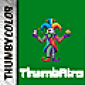
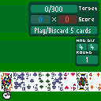
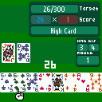

Each round sets a score to beat. You have 4 hands and 4 discards to reach it by playing poker hands from a standard 52-card deck. Clear the target and you open a booster pack to warp your deck, then the next round demands more. Miss it and the run is over — your best single hand is your trophy.


You hold 8 cards. Move the pointer with LEFT/RIGHT, UP to select a card and DOWN to deselect — up to five. Then:
Either way you redraw to refill the gap, so the deck thins as the round runs. The HUD shows score / target, the current hand's base and mult, the hand type, and your remaining hands, discards and round.
A hand scores base × mult. The poker rank sets the starting base and mult; then every scoring card adds its rank value (Ace = 14, face = 11–13) plus any card modifiers, and your jokers pile on. Bigger ranks pay more base:
| Hand | Base | Mult |
|---|---|---|
| High Card | 5 | ×1 |
| One Pair | 10 | ×2 |
| Two Pair | 20 | ×2 |
| Three of a Kind | 30 | ×3 |
| Straight | 30 | ×4 |
| Flush | 35 | ×4 |
| Full House | 40 | ×4 |
| Four of a Kind | 60 | ×7 |
| Straight Flush | 100 | ×8 |
| Royal Flush | 100 | ×10 |
| Five of a Kind | 120 | ×12 |
| Flush House | 140 | ×14 |
| Flush Five | 160 | ×16 |
The bottom three need duplicate cards or a full one-suit house — impossible with a plain deck, but very much on the table once tarots start warping it.
Clear a round and the booster pack deals 4–7 cards face up. Take one or two (UP/DOWN to pick, A to confirm). What you can find:
Jokers are passive scoring engines — you can hold two, and taking a third pushes out the oldest. View them any time with LB/RB. Each carries one modifier:
Build a joker around the deck you're building: an Even-mult joker loves a deck you've upranked into even ranks; a Face joker wants the paint left in.
| Input | Playing | Booster |
|---|---|---|
| LEFT / RIGHT | Move the pointer | Move the pointer |
| UP / DOWN | Select / deselect (max 5) | Select / deselect (max 2) |
| A | Play the hand | Confirm picks |
| B | Discard & draw | — |
| LB / RB | View jokers | View jokers |
| MENU | Toggle sound | |
On the title screen, press A to deal in. After a Game Over, A starts a fresh run.